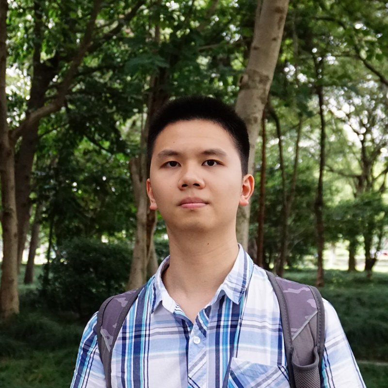

ASPLOS 2026
Zehao Fan

I am a Ph.D. student in Electrical, Computer, and Systems Engineering at Rensselaer Polytechnic Institute, advised by Prof. Liu Liu.
My research focuses on making large language model inference more efficient by rethinking how models use memory and move data. I work across computer architecture and AI systems, with an emphasis on KV-cache management, Mixture-of-Experts, and hardware–software co-design. I am also interested in extending these ideas to long-context and agentic LLM workloads.
I am looking for summer internship opportunities.
Publications & manuscripts
Under review
CAMEO: Context-Aware Mixture-of-Experts Orchestration for Inference
Under review
BEAR: Bandwidth-Efficient Adaptive Recovery of Low-Bit Quantization Errors in Mixture-of-Experts
Under review
Education
Rensselaer Polytechnic Institute
Ph.D. student in Electrical, Computer,
and Systems Engineering
Aug. 2024 – Present
University of Science and Technology of China
Bachelor of Engineering in Computer Science
Sept. 2020 – Jun. 2024
Academic service
- IEEE Transactions on Computers
- Reviewer
- DAC 2026
- External reviewer (sub-reviewer)
- ASPLOS 2026
- Artifact Evaluation Committee reviewer